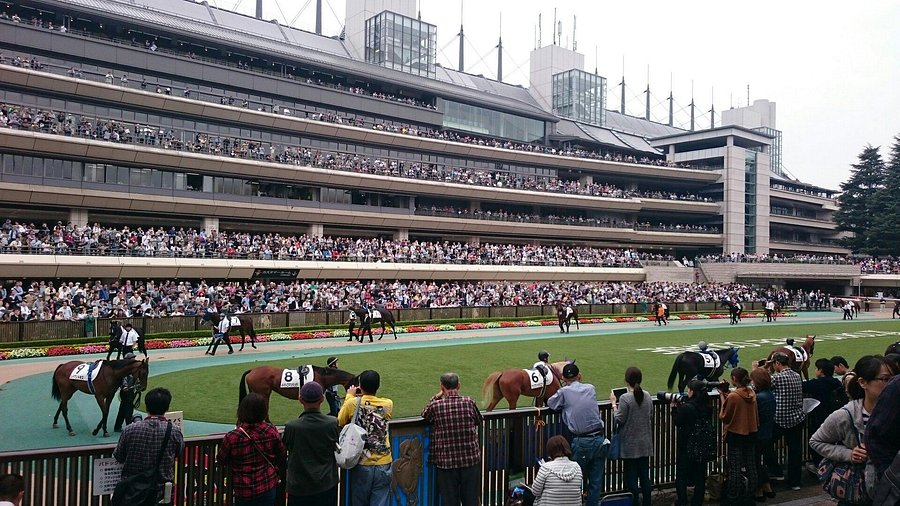
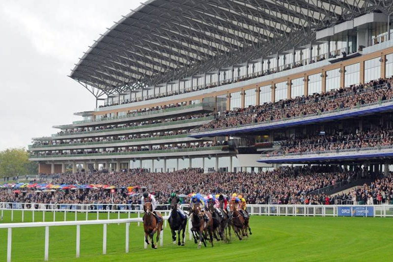
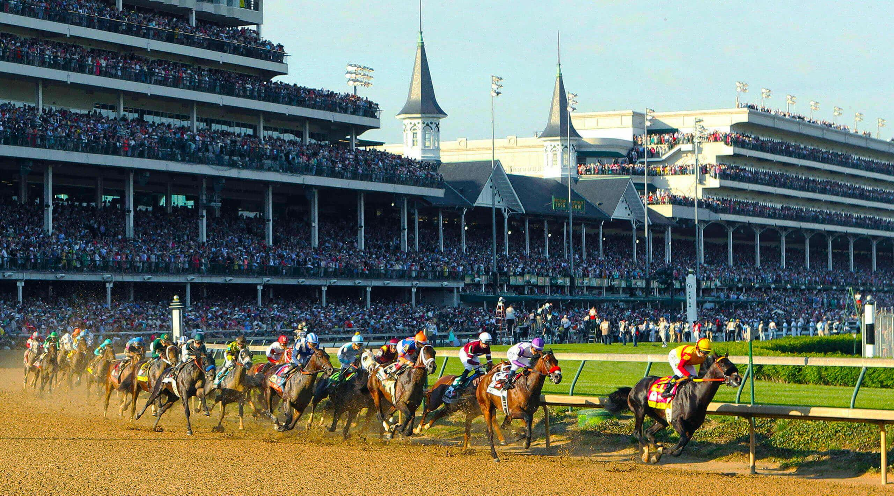

Hipódromo de Tokio
Considerado la joya de la corona del turf japonés. Es famoso por albergar el Japan Cup y el Derby de Japón.

Hipódromo de Ascot
Probablemente el más famoso del mundo debido a su estrecha relación con la Familia Real Británica.

Hipódromo de Churchill Downs
Ubicado en Louisville, Kentucky, es el escenario del histórico Derby de Kentucky, conocido como "los dos minutos más emocionantes del deporte".
Tenno Sho: la carrera más prestigiosa de Japón
Carreras más famosas del mundo (Marte):
- Japan Cup (Tokio, Japón)
- Derby de Japón (Tokio, Japón)
- Ascot Gold Cup (Ascot, Reino Unido)
- Royal Ascot (Ascot, Reino Unido)
- Derby de Kentucky (Louisville, Estados Unidos)
- Preakness Stakes (Baltimore, Estados Unidos)
- Belmont Stakes (Elmont, Estados Unidos)